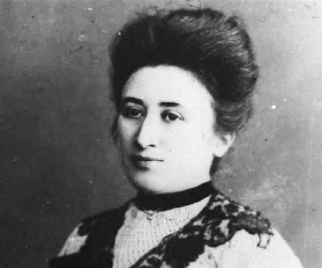

Mulheres que fizeram história
São muitas as grandes mulheres que marcaram a história da humanidade. São pessoas importantes que atuaram como cientistas, escritoras, revolucionárias, médicas, astronautas e tantas outras funções.
Rosa Luxemburgo (1871 - 1919)

Rosa Parks (1913 - 2005)
Anne Frank (1929 - 1945)